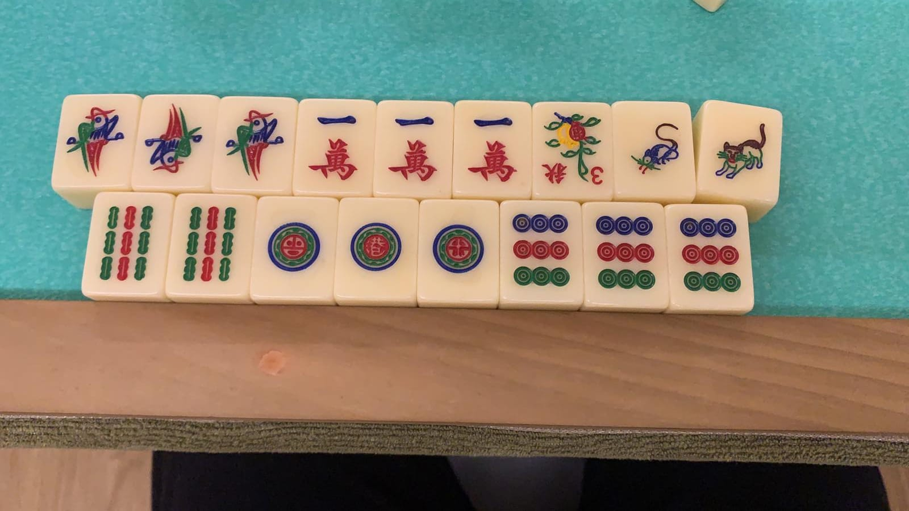

~ Picture of me
About My Personal Life!
Hello, I am Jovis, I am the middle child of my family. I have 2 siblings, an older brother that is 19 this year and is currently studying in ITE College Central, and a younger brother who is 10 this year and is currently studying in Teck Whye Primary School. I am generally an introverted person and do not like to converse much with people that I have not met or talked to before. However, after I have gotten to know the person better, I am very extroverted, and will always try to start up a conversation. Generally, I am an easy-going person and always try to go with the flow, and most of the time I will improvise everything that I do in the day, such as my activities and what I want to eat.
My Values!
My values are that no matter what I do, I will always make sure that I will never regret doing it. I want to live a future with no regrets. I want to live a fulfilled life, where I do everything that I want to do and make memories that I want to make. I don’t ever want to look back and sulk while thinking about all the things that I could have done better in the past. No matter what I do, I already did it in the past, and at that moment of time, I have already decided for myself that the decision was the best choice I could make. At the end of the day, I want to grow old, knowing that whatever I have done to that point in life, has been things that I do not regret doing. I want to look back at all the amazing memories I have made with the people I chose to be around. I want to look back, knowing that the job I am currently working, is the one I worked so hard for, and I want to be proud of myself that I was able to work so hard to get that amazing career.
My Interests!
I am very interested in coding, or more specifically, the Pentesting and cybersecurity aspects of it. However, I love everything about coding. I love to start new projects, as a new challenge always awaits me. It allows me to challenge myself to be able to solve problems. I always love facing hard challenges, as it allows me to grow and become a better programmer, allowing me to be one step closer to be able to work in my dream company, Google. Another then coding, I love music and play the drum, ukelele, and a little bit of piano. However, mainly I only play the drums. I started playing the drums at a young age and fell in love with it. Since 5 years old, I have been learning drums. However due to studies, I stopped learning drums at the age of 12, and I was only able to reach grade 6 instead of the initial possibility of being grade 8 at my current age. However, this did not stop me from still jamming to songs every single day after school. It is always an amazing experience to just start playing to random songs. The beats that I create may not always sound good, but at the end of the day, this teaches me how to improvise on the spot, and create new beats as the music continues.
My Hobbies!
One of my most favourite activity is to play Mahjong. I know it sounds weird and makes me sound like a gambler, however, Mahjong is a very complex game, it is a game that is not only based on luck, but it is also highly dependent on skill. Mahjong has many methods of winning and using the starting 13 tiles, I have to build sets of tiles, which allows me to get a win with a higher number of points, while also not throwing the tiles to other players. Many people always look down on Mahjong, saying that it is unhealthy and not a good way to pass the time, however it allows me to challenge my brain and learn how to improvise on the spot. As it is also a game of luck when u get the tiles, you have to decide on the spot which tile to throw and calculate the possibility of it being the winning tile of others, and also how it can greatly support the tiles in your hand. Most people do not know, but so many skills go into playing Mahjong. You have to be able to know how to observe the table, especially the discard pile and what people have been throwing, the ability to calculate the probability of your winning tile, being able to come to you, and etcetera. This is why I love playing Mahjong. Other than that, I also like to indulge myself in a few games of volleyball with friends, as it allows me to keep active and stay fit. We don’t play much anymore, however, now and then we would still plan a meet-up and play together at a booked court.

~ one-nine-one-nine win in Mahjong